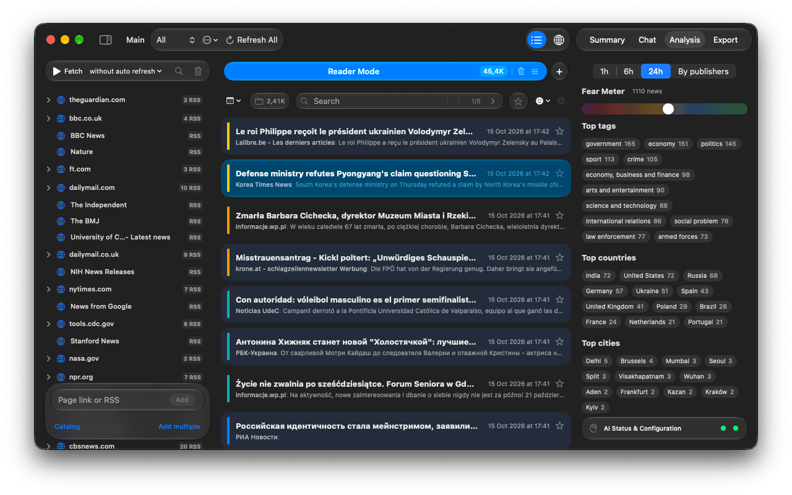
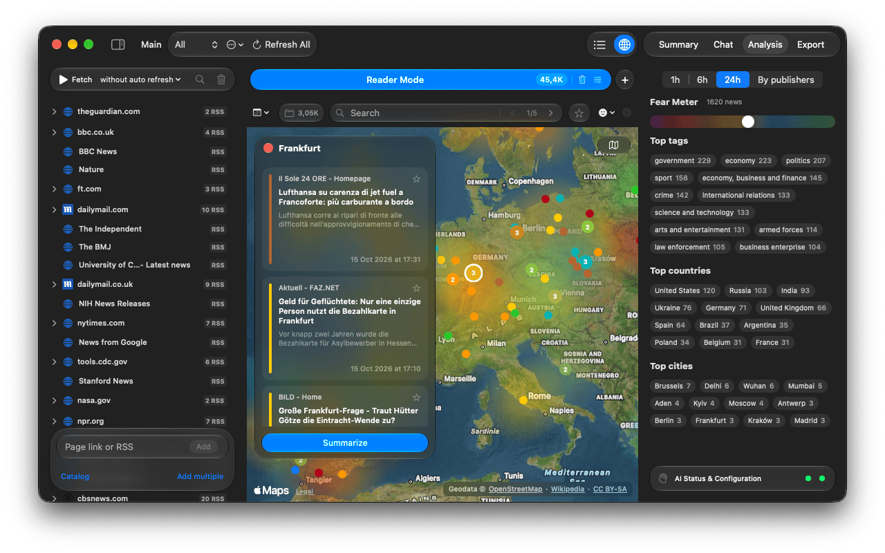

Handbook · Reading
Analysis, Fear Meter and the Globe
See the mood of the news, top topics and places, publisher tone, and news on a map.
Analysis tab
Open Analysis in the inspector and choose a window: 1h, 6h, 24h or By publishers.

- Fear Meter: the average tone of news in the window.
- Top tags, Top countries, Top cities: click one to add it to the search; ⌥-click to replace the search with it.
- By publishers: each outlet's typical tone over the whole filtered list. Click a publisher to filter by it.
- If nothing arrived in the last hour, the windows count back from the newest news and say Data as of ….
Globe
Switch the toolbar from List to Globe. Zoomed out, a heatmap shows the tone of news by region; zoomed in, bubbles show cities. Click a city for its news and a Summarize button. Map Modes switches between Satellite and Explore.

Places come from the article text; news without a recognisable place is not on the map.
Questions or problems? Open an issue in the
GitHub repository.